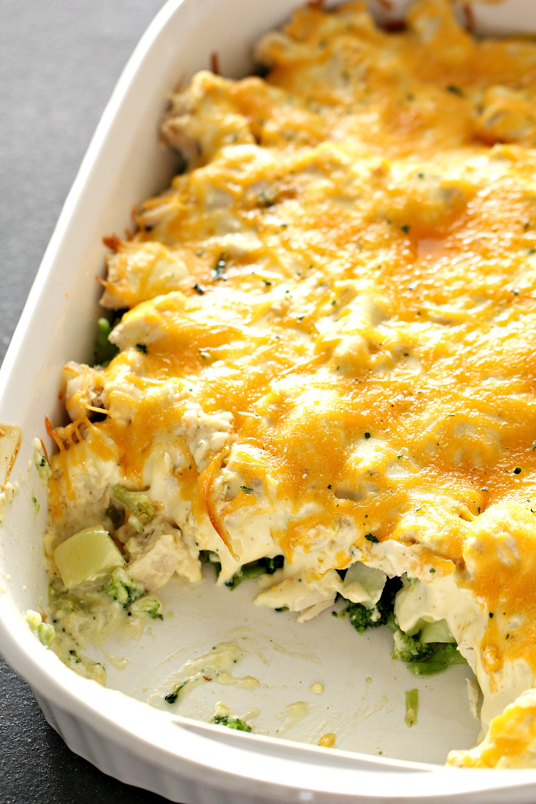

Chicken & Broccoli

Description
A perennial family-favorite, Chicken and Broccoli casserole is sure
to please kids and adults alike. When served over rice, this combination
of tender chicken, broccoli, creamy sauce, and melted cheese serves as a
complete meal.
Ingredients
- 1.5 lbs cooked, cubed (or shredded) chicken
- 24 oz frozed broccoli florets
- 24 oz frozed broccoli florets
- 2 10.5 oz cans Cream of Chicken soup
- 1 10.5 oz can Cream of Mushroom soup
- 1/4 cup mayonnaise
- 2 tsp curry powder
- salt and pepper
- shredded cheddar cheese
Steps
- Preheat oven to 350 degrees F.
- Place the frozen broccoli in a 9x13 glass baking dish.
- Layer the cooked chicken on top of the broccoli.
- In a bowl, combine the cans of soup, mayonnaise, curry powder,
salt, and pepper.
- Pour soup mixture over the chicken.
- Bake for 30-40 minutes until hot in the center.
- Top with shredded cheddar cheese, then bake for an additional
10 minutes to allow cheese to melt.
- Serve over cooked rice.